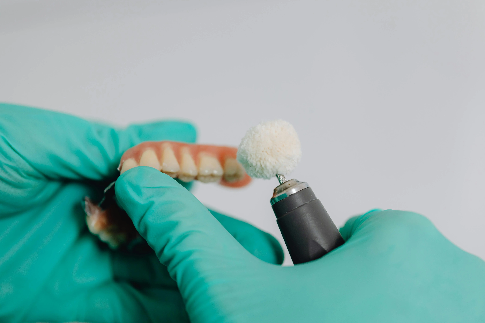
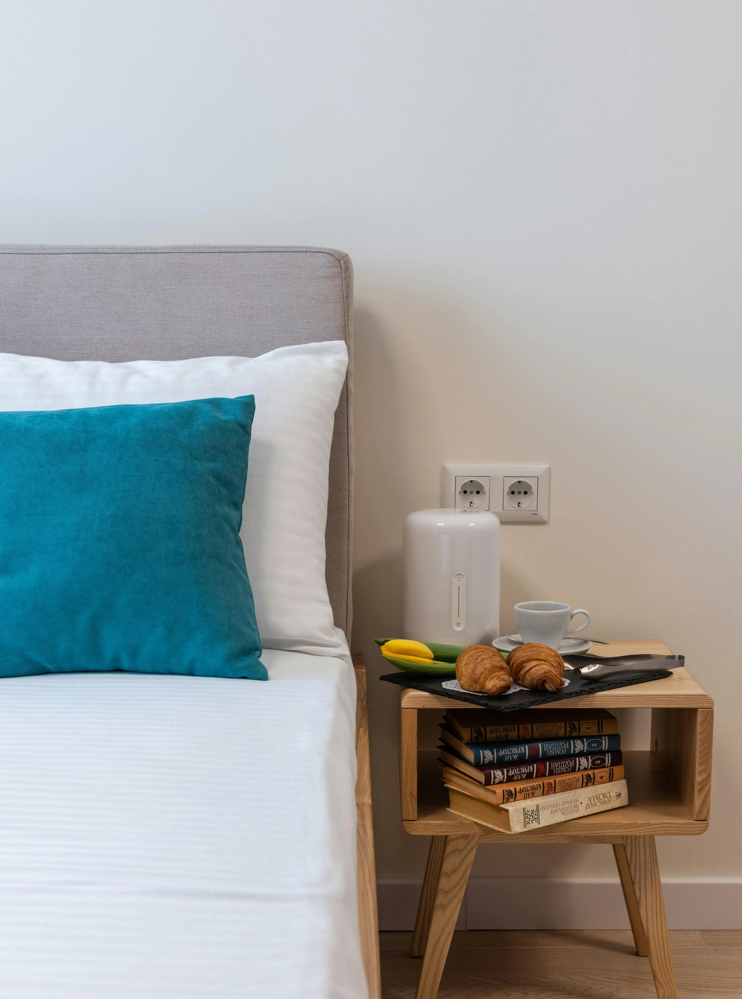
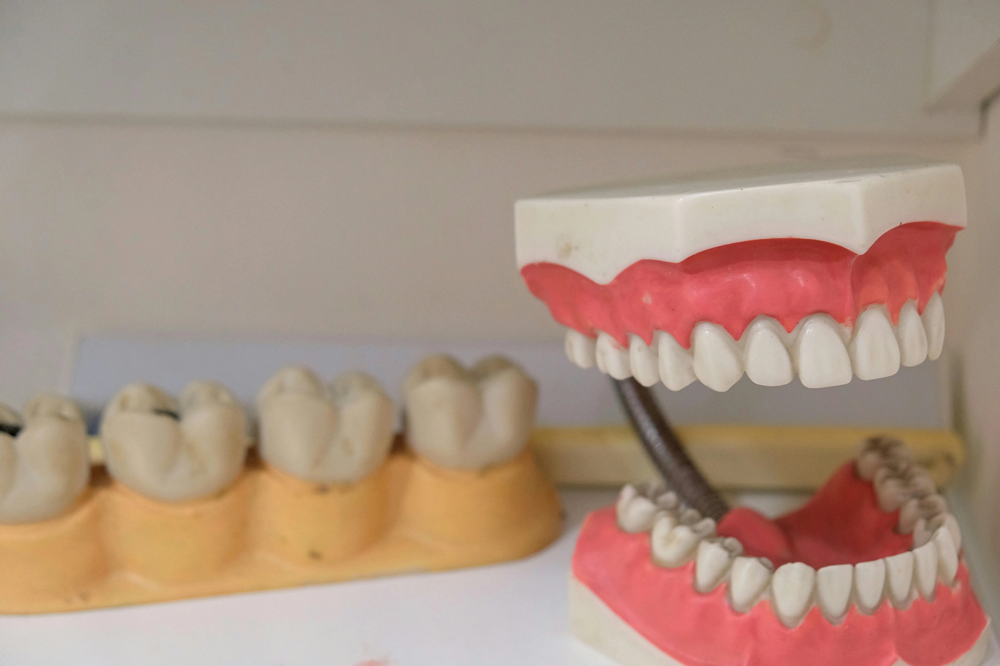
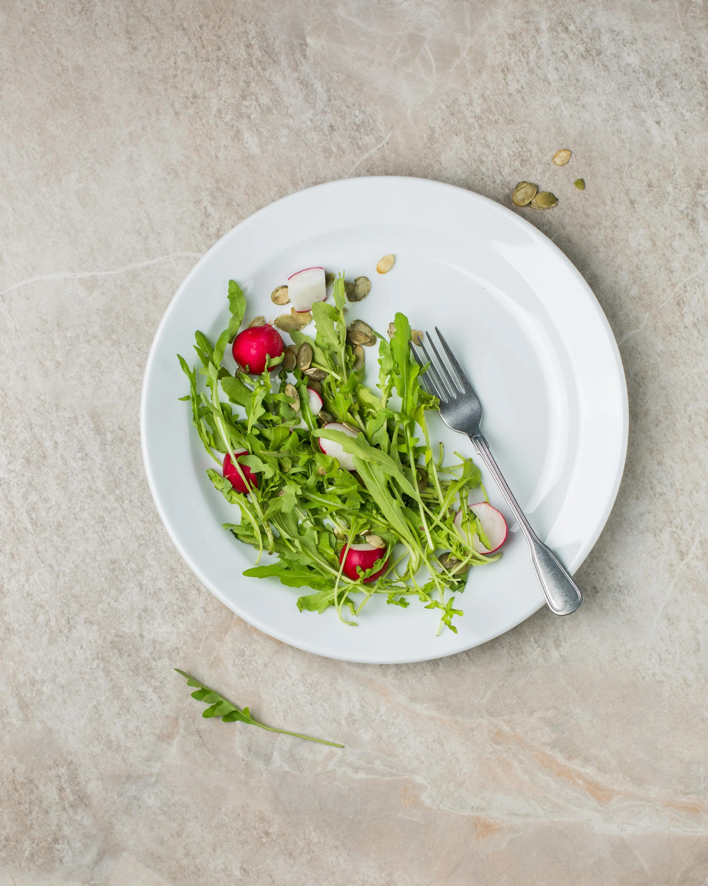

מאמרים מקצועיים
כל מה שחשוב לדעת על שיקום הפה, שיניים תותבות בהתאמה אישית, ושמירה על בריאות חלל הפה בגיל השלישי.
למה חובה לעשות שיניים תותבות אך ורק דרך רופא שיניים מוסמך?
חושבים לחסוך וללכת ישירות לטכנאי שיניים? גלו למה בניית שיניים תותבות חייבת להתבצע על ידי רופא שיניים מוסמך, ואיך זה שומר על בריאות הפה שלכם...
קראו עוד
המדריך המלא: איך לנקות ולתחזק שיניים תותבות נכון?
שיניים תותבות דורשות תחזוקה נכונה. גלו ממה חובה להימנע, איך לצחצח נכון, ולמה אסור בשום אופן להשתמש במשחת שיניים רגילה...
קראו עוד
האם מותר לישון עם שיניים תותבות? כל מה שצריך לדעת
האם צריך להוציא את השיניים התותבות בלילה? גלו את ההשלכות של שינה עם תותבות על החניכיים, ספיגת העצם והסיכון לדלקות...
קראו עוד
דבק לשיניים תותבות: המדריך המלא (ומתי הוא נורת אזהרה?)
משתמשים בדבק כדי שהתותבת לא תיפול? גלו איך למרוח אותו נכון, ממה להימנע, ולמה שימוש יתר מעיד על צורך בריפוד...
קראו עוד
איך לאכול עם שיניים תותבות חדשות? המדריך למתחילים
קשה לכם ללעוס עם התותבות החדשות? גלו את כל הטיפים שיעזרו לכם לחזור ליהנות מאוכל, ממה מומלץ להתחיל וממה כדאי להימנע...
קראו עודתותבת שלמה לעומת תותבת חלקית: מה ההבדלים?
איבדתם שיניים ומתלבטים בין תותבת שלמה לחלקית? מדריך מקיף על ההבדלים, היתרונות, ולמה חובה לשמר שיניים טבעיות ככל האפשר...
קראו עוד